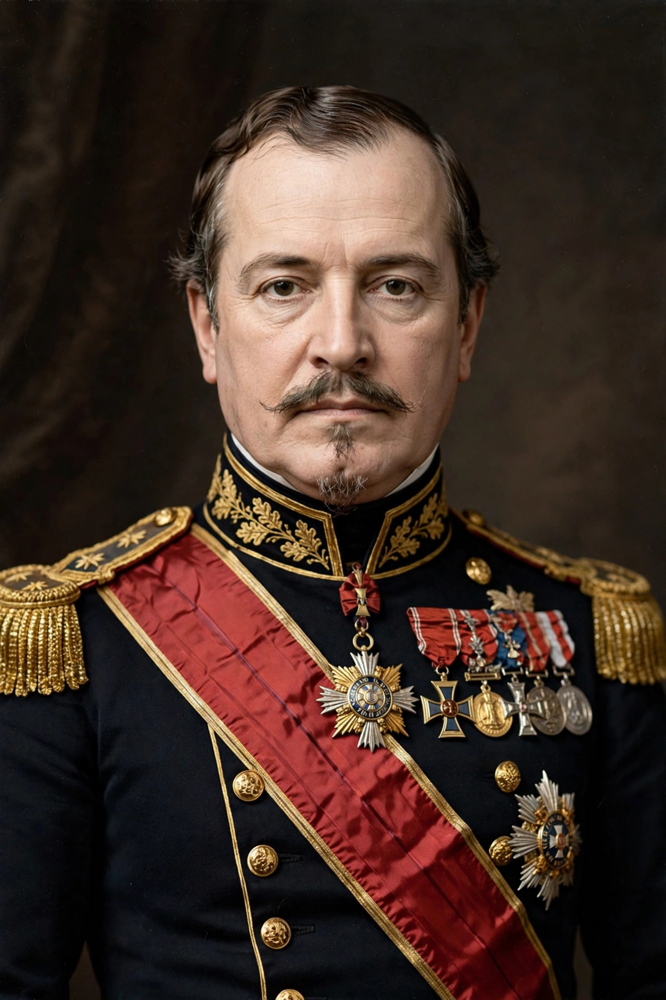

Napoleon III
| Napoleon III | |
|---|---|
 | |
| Emperor of the French | 2 December 1852 – 4 September 1870 |
| President of France | 20 December 1848 – 2 December 1852 |
| Born | 20 April 1808, Paris, France |
| Died | 9 January 1873 (aged 64), Chislehurst, England |
| Father | Louis Bonaparte |
| Mother | Hortense de Beauharnais |
| Spouse | Eugénie de Montijo |
Napoleon III (born Charles-Louis Napoléon Bonaparte; 20 April 1808 – 9 January 1873), known as Louis-Napoléon Bonaparte before taking the imperial name, was President of France from 1848 to 1852 and then Emperor of the French from 1852 to 1870. The nephew of Napoleon I, he was the first President of France and the last monarch of France.
Early life and exile
Louis-Napoléon was born in Paris, the son of Louis Bonaparte, King of Holland, and Hortense de Beauharnais. Raised in exile after 1815, he spent his youth in Switzerland and Germany. He twice attempted to seize power in France — at Strasbourg in 1836 and at Boulogne in 1840 — and was imprisoned in the fortress of Ham, from which he escaped in 1846 disguised as a workman.
Presidency and coup d'état
After the Revolution of 1848, he was elected President of the Second Republic by an overwhelming popular vote, trading on the magic of his uncle's name. Barred by the constitution from re-election, on 2 December 1851 he launched a coup d'état, dissolved the National Assembly, and a year later proclaimed himself Emperor following a plebiscite.
Second Empire
The Second Empire combined authoritarian rule with ambitious modernisation. Napoleon III promoted railways, banking and industry, sponsored the rebuilding of Paris under Baron Haussmann, and signed the Cobden–Chevalier free trade treaty with Britain in 1860. Abroad he joined Britain in the Crimean War, intervened in Italy in 1859, expanded French influence in Indochina and mounted a disastrous intervention in Mexico.
Downfall
In 1870, manoeuvred by Bismarck over the Ems Dispatch, France declared war on Prussia. Napoleon III was captured at the Battle of Sedan on 2 September 1870; the Empire collapsed two days later and a republic was proclaimed. Released in 1871, he lived in exile at Camden Place, Chislehurst, in Kent, where he died in 1873.
Legacy
Karl Marx's The Eighteenth Brumaire of Louis Bonaparte made his rise a classic case of history repeating itself "first as tragedy, then as farce". Modern historians give a more mixed verdict, crediting his economic modernisation while condemning the coup and the Mexican adventure.